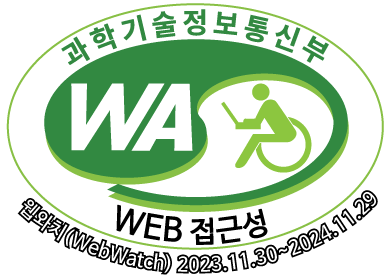

<!DOCTYPE html>
<html>

<head>
    <meta charset='utf-8'>
    <meta http-equiv='X-UA-Compatible' content='IE=edge'>
    <title>Page Title</title>
    <meta name='viewport' content='width=device-width, initial-scale=1'>
    <link rel='stylesheet' type='text/css' media='screen' href='2_과제.css'>
    <script src='main.js'></script>
</head>

<body>
    <!-- =========== 푸터 시작 =========== -->
    <div id="footer">
        <!-- =========== 푸터 좌측 =========== -->
        <div id="footerLeft">
            <!-- =========== 푸터 좌상단 =========== -->
            <div>
                <p>서울시 서대문구 연희로32길 51(연희동) 03718</p>
            </div>
            <!-- =========== 푸터 좌하단 =========== -->
            <div>
                <p>대표전화 : 02-330-8899 ㅣ 팩스 : 02-330-1736 ㅣ <a
                        .href="https://namu.sdm.go.kr/site/main/content/privacy_guide"
                        class="privacyPolicy pointerInterface">&nbsp;개인정보처리방침&nbsp;</a>
                </p>

            </div>
        </div>
        <!-- =========== 푸터 우측 =========== -->
        <div id="footerRight">
            <!-- =========== 인증마크 이미지 두개 =========== -->
            <a href="https://www.kisia.or.kr/"></a>
            <a></a>
            <!-- =========== 푸터 우측 패밀리 사이트 =========== -->
            <select>
                <option>패밀리사이트</option>
                <option value="http://www.sdm.go.kr/index.do">서대문구청</option>
                <option>서대문형무소 역사관</option>
                <option>서대문도시관리공단</option>
                <option>서대문구의회</option>
            </select>
            <!-- =========== 패밀리사이트 이동 버튼 =========== -->
            <input class="familysiteBtn pointerInterface" type="button" value="Go">
        </div>
    </div>
    <!-- =========== 푸터 끝 =========== -->
</body>

</html>